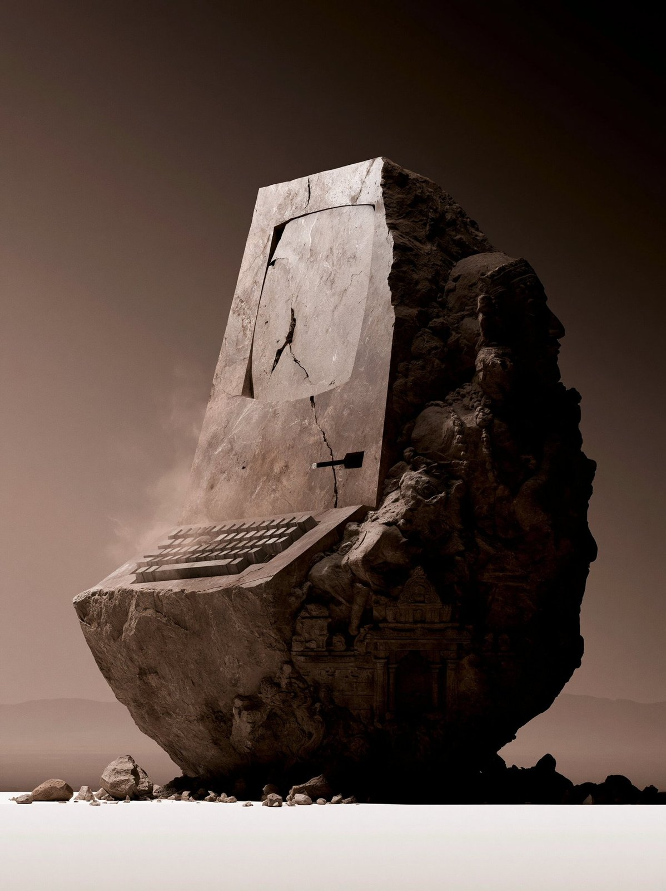
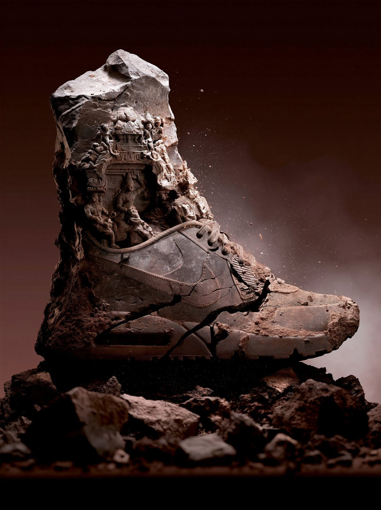
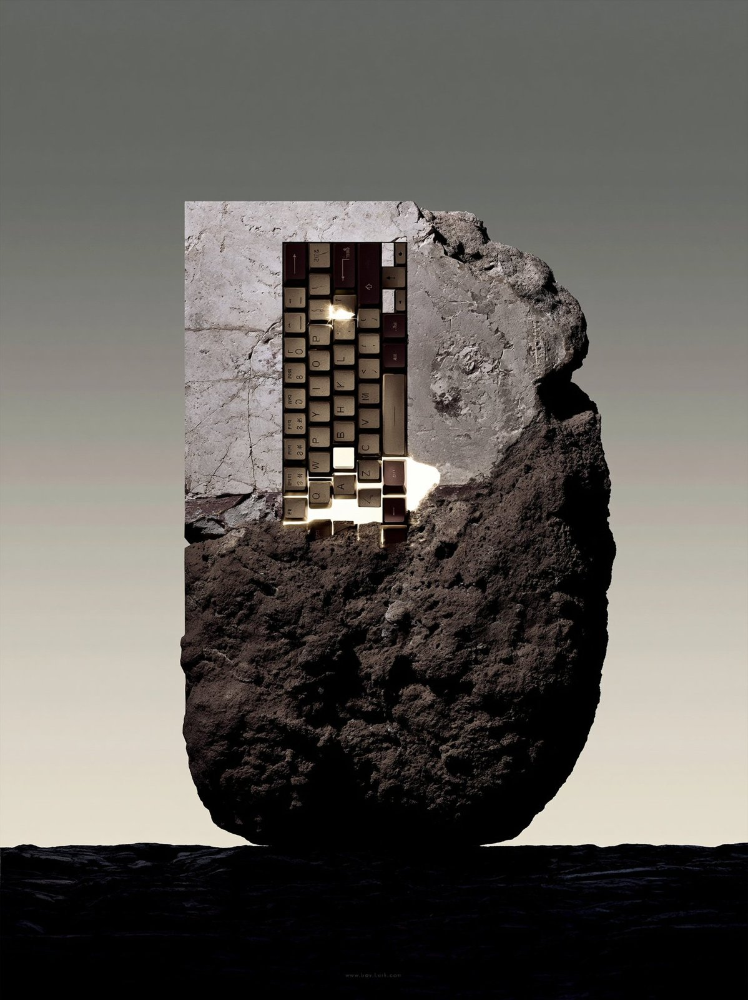

Carved Desert Monoliths
Desert boulders carved into heads, boots and buildings with windows, in warm brown studio-product tones, from a Midjourney v8.1 sref and profile.
| Creator | Sycomore @The_Sycomore |
|---|---|
| Platform | X |
| Model | Midjourney v8.1 |
| Likes | 240 |
| Posted | 2026-05-04 |
| Visual style | Surreal / dreamcore |
| Regional vibe | No specific region |
| Genre | Product |
| Mood | Epic |
Prompt · from the post
--sref 520517274 --profile 72xonyq --hd --v 8.1